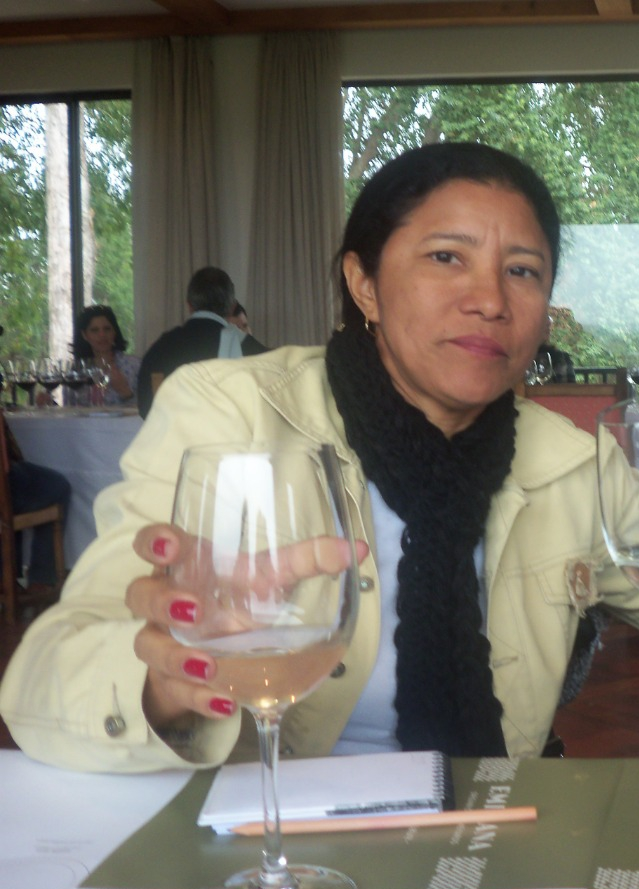

Pagina Pessoal de Wanderléa
minhas redes sociais:
- facebook
- instagram
informações curricular:
- formação academica
- experiencias profissionais
minha foto:

gosto de cozinhar comidas tipicas:
- moniçoba
- pato no tucupi
- tacaca
lugares que passei com a família:
- praia do forte
- Lençois Maranhenses
- Praia do forte
- Porto de galinha
- Praia de Pipa
tipos de musicas que gosto:
- Bossa Nova
- MPB
- Religiosa